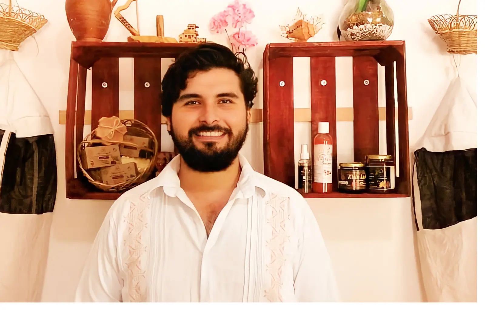
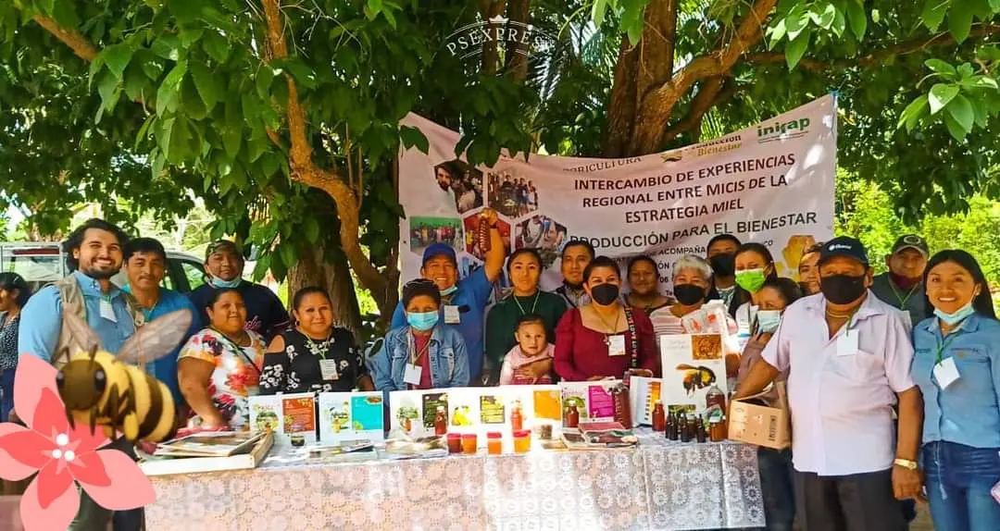
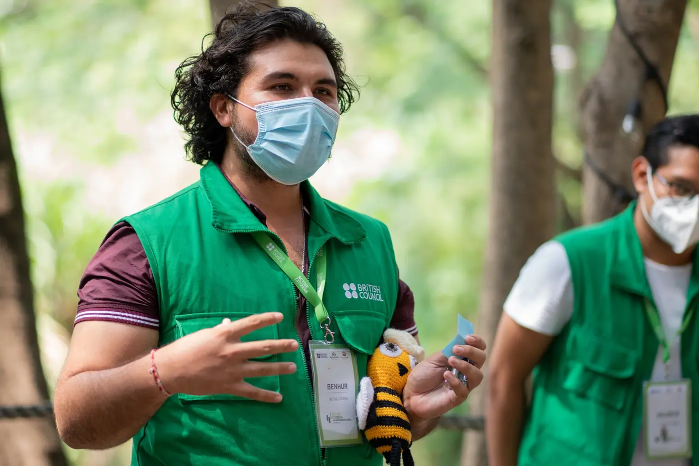
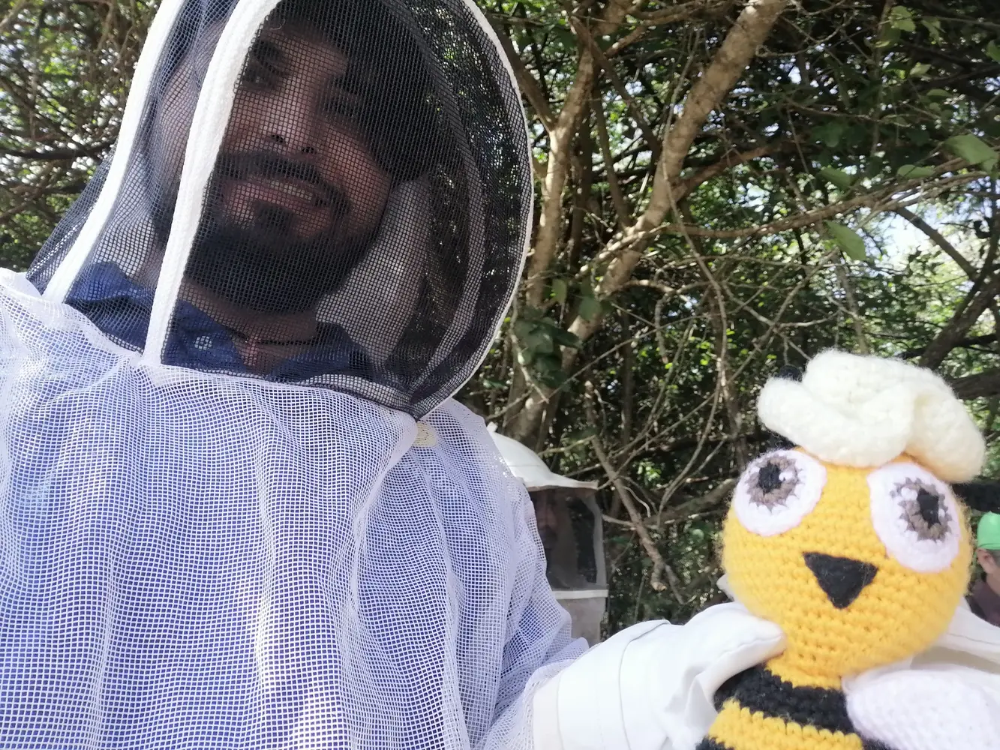
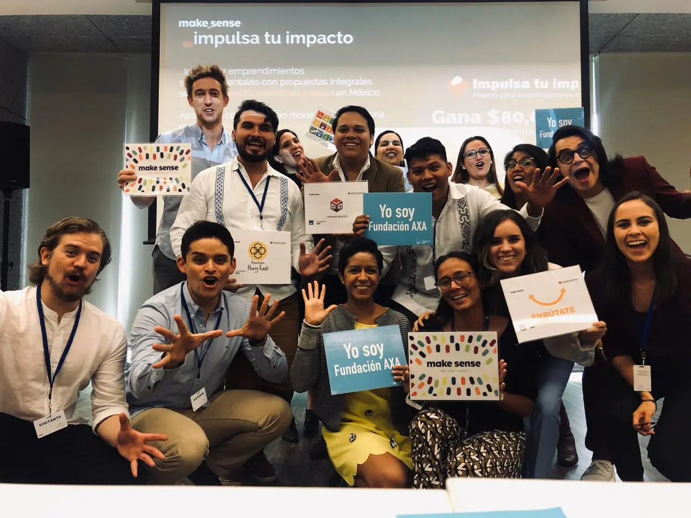
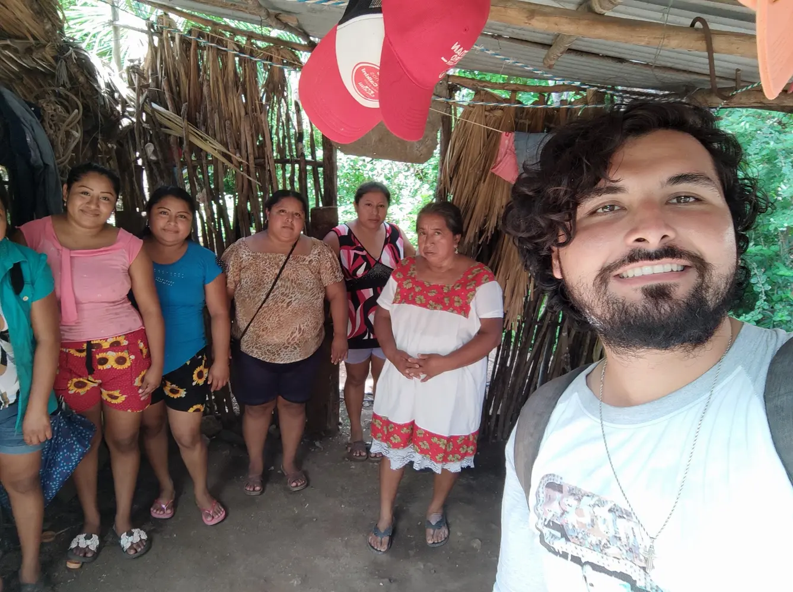
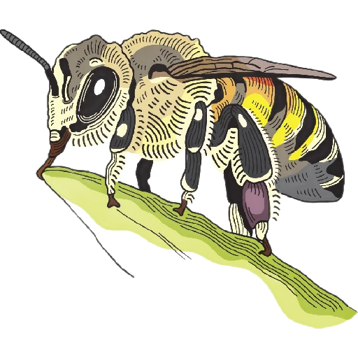
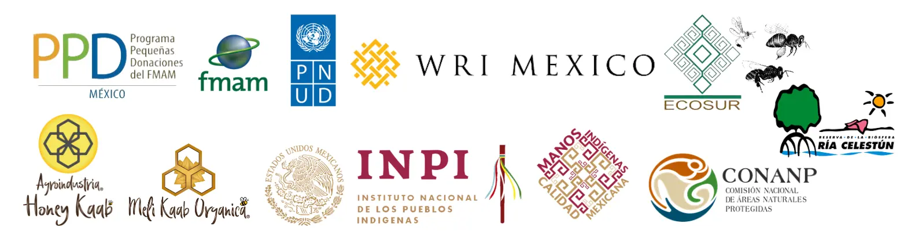

Gestión
Dirección, planeación, coordinación, administración y fortalecimiento de equipos.
Diseño, coordino y evalúo proyectos que conectan gestión, evidencia e impacto para producir resultados sociales, ambientales y organizacionales.

Propuesta profesional
Acompaño el ciclo completo de un proyecto: desde su diseño y operación hasta la medición de resultados y la toma de decisiones.
Dirección, planeación, coordinación, administración y fortalecimiento de equipos.
Investigación, líneas base, indicadores, monitoreo, evaluación y sistematización.
Sostenibilidad, desarrollo territorial, innovación y capacidades organizacionales.
Medición y evaluación
Construyo y evalúo indicadores para proyectos sociales, ambientales, productivos, organizacionales y de gestión. El propósito no es acumular datos, sino saber qué está cambiando, por qué y qué conviene ajustar.
Trabajos seleccionados
Tres proyectos que muestran dirección, coordinación territorial, investigación y sostenibilidad en acción.

Creación y dirección de una agroindustria maya para enfrentar la baja rentabilidad y la desarticulación de productoras y productores.

Fortalecimiento organizativo y documentación de resultados mediante acompañamiento regional.

Conservación del manglar y de la abeja nativa mediante un modelo comunitario en Isla Arena.

Acompañamiento a emprendimientos juveniles en el territorio maya.
Qué puedo aportar
Planeación estratégica, coordinación operativa, administración, presupuestos y equipos.
Marco Lógico, teoría del cambio, PbR, entregables, fondos y rendición de cuentas.
Diagnósticos, líneas base, indicadores, seguimiento, sistematización y aprendizaje.
Métodos mixtos, trabajo de campo, análisis territorial y publicaciones académicas.
Cambio climático, biodiversidad, servicios ecosistémicos y sistemas productivos.
Economía social, juventudes, gobernanza, participación e interculturalidad.
CFDI, presupuestos, inventarios, cuentas, Excel avanzado, Aspel-COI/SAE y gestión comercial.
Formación de adultos, diseño de cursos, educación popular, talleres y formación de formadores.
Consultoría, capacitación y colaboración
Líneas de trabajo para empresas, instituciones públicas, universidades, fundaciones, OSC y programas de cooperación.
Diseño y acompañamiento técnico desde la planeación hasta la evaluación.
Sistemas de medición útiles para aprender, decidir y demostrar resultados.
Evidencia rigurosa vinculada con problemas reales y trabajo territorial.
Procesos formativos para equipos, juventudes, organizaciones y comunidades.
Trayectoria
Dirección integral de una agroindustria de economía social en la Península de Yucatán: estrategia, operación, administración, gestión financiera, gobernanza y procuración de fondos.
Coordinación regional, línea base, talleres, sistematización y producción de evidencia con 13 organizaciones en tres estados.
Supervisión de campo, reentrevista, validación de cuestionarios y control de calidad: cinco entrevistadores, 2,000 inmuebles y 1,200 encuestas.
Acompañamiento a más de 100 productoras y productores en transición agroecológica, bioinsumos, registro y georreferenciación.
Formación a juventudes mayas en economía social, emprendimiento, modelos de negocio y registro de marcas mediante la iniciativa Soluciones Territoriales Chacáh.
Diseño e impartición de programas para liderazgos en gestión territorial, gobernanza y educación popular, con enfoque de andragogía y diálogo de saberes.
Mentoría a emprendimientos en diseño de proyectos, modelo de negocio, teoría del cambio y sostenibilidad financiera.

Territorio, conocimiento e impacto
“Aprendí que un proyecto no se sostiene solo con buenas ideas: necesita organización, evidencia y vínculos de confianza.”
Mi trayectoria se ha construido entre comunidades, organizaciones, investigación y gestión en la Península de Yucatán. Ese recorrido me enseñó a mirar cada proyecto como un sistema donde las personas, los recursos y las decisiones deben conectarse.
He cofundado y dirigido una agroindustria de economía social, coordinado programas regionales, acompañado organizaciones y comunidades, supervisado operativos de campo y contribuido a investigaciones y publicaciones. Cada experiencia amplió mi manera de entender la gestión: los resultados dependen tanto de una buena planeación como de la capacidad de escuchar, organizar y medir.
Hoy trabajo en la intersección entre gestión, evidencia e impacto: diseño proyectos, construyo indicadores, evalúo resultados y colaboro con equipos que buscan convertir ideas y recursos en cambios demostrables y sostenibles.
Investigación y conocimiento

UAM Azcapotzalco / SEMARNAT / CONANP · ISBN 978-607-28-3490-3.
Ciencia y Tecnología ITESCAM-Calkiní, 3(3), 99–112 · Autor principal.
Ciencia y Tecnología ITESCAM-Calkiní, 3(2), 129–139 · Autor principal.
Autor del contenido sobre miel monofloral de Melipona beecheii de achiote (Bixa orellana) · Equipo Abejas–ECOSUR y SADER.
Líneas de trabajo: desarrollo territorial, meliponicultura, biodiversidad, servicios ecosistémicos, sistemas productivos sostenibles, comunidades rurales, cambio climático, desarrollo social y economía social.
Experiencia internacional: estancia de investigación en la Universidad del Valle, Cali, Colombia, sobre caracterización de almidón termoplástico de fuentes no convencionales.
Docencia y capacitación
Experiencia como docente, facilitador, formador de formadores y conferencista con comunidades, juventudes, organizaciones e instituciones.
Gestión y diseño, teoría del cambio, modelos de negocio, emprendimiento y economía social.
Educación ambiental intercultural, soberanía alimentaria, agroecología y desarrollo comunitario.
Educación popular, diálogo de saberes, formación de formadores, liderazgo y perspectiva de género.
Reconocimientos
Actores, aliados y organizaciones vinculadas a la trayectoria

Contacto
Disponible para oportunidades laborales, puestos de coordinación y dirección, consultoría, construcción de indicadores, investigación, docencia, conferencias, capacitación y colaboración institucional. Disponibilidad nacional e internacional, para trabajo de campo, viajes y reubicación.